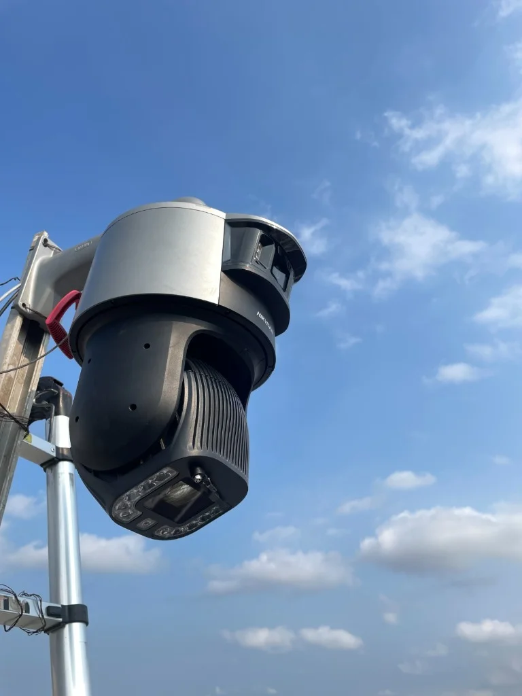
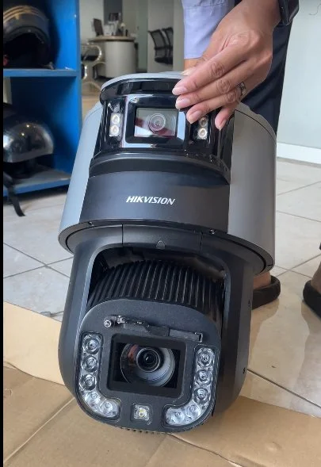
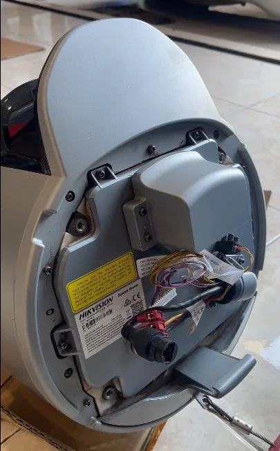

Portofolio Solusi CCTV dan Pengawasan Pertambangan
Dokumentasi penerapan langsung perangkat surveilans Hikvision di site pertambangan, mulai dari tahap pre-commissioning unit, terminasi kabel industrial, perakitan tiang menara mandiri solar 4G, hingga pengawasan operasional pit aktif.

Sistem CCTV Solar 4G TandemVu PTZ Pit Tambang Batubara
Implementasi sistem pemantauan visual mandiri bertenaga surya (Solar 4G Off-Grid) dengan kamera Hikvision TandemVu Speed Dome PTZ pada menara tiang area pit aktif tambang terbuka. Menggabungkan lensa panoramic ColorVu untuk sudut pandang menyeluruh 24 jam dan lensa PTZ 32× optical zoom untuk pemantauan kestabilan lereng (slope monitoring) serta operasional alat berat tanpa tarikan kabel listrik PLN.
Instalasi Menara Tiang CCTV Pit Tambang & Braket Tenaga Surya
Proses perakitan dan pendirian (erection) menara tiang baja CCTV di titik strategis lereng pit aktif tambang menggunakan sistem tangga kerja teknisi tersertifikasi. Tiang dilengkapi braket modul solar panel surya, grounding penangkal petir terpadu, serta klem baja anti-vibrasi guna meredam getaran keras dari lalu lalang armada dump truck kelas 100 ton.

Pre-Commissioning Kamera Dual-Lens Hikvision TandemVu PTZ
Pemeriksaan fisik menyeluruh dan uji komisioning pra-instalasi (FAT/SAT) unit kamera surveilans Hikvision TandemVu Speed Dome. Pengujian mencakup kalibrasi sinkronisasi lensa ganda (ColorVu F1.0 dan lensa PTZ jarak jauh), mekanisme wiper pembersih lumpur otomatis, sensor pemanas internal (heater), serta pengujian segel housing IP67 sebelum unit dinaikkan ke puncak menara.

Terminasi Kabel & Baseplate Heavy-Duty Weatherproof CCTV
Instalasi sistem pengkabelan berstandar industri dan terminasi soket daya serta transmisi data pada baseplate bawah unit Speed Dome. Dilengkapi kawat sling baja pengaman (safety wire tether) anti-jatuh, gland silikon anti-rembesan air hujan badai, dan pelindung korosi kimia untuk menjamin keandalan perangkat dari paparan debu batubara dan gas metana di area pit.

Sistem Pengawasan Dermaga Jetty dan Loading Tongkang
Kamera tahan uap air asin dan lumpur rating IP68 untuk memantau proses bongkar muat conveyor shiploader ke tongkang (barge) 300 feet serta verifikasi garis muatan draft mark kapal.

Sistem Pemantauan Central Control Room Tambang Emas
Pembangunan infrastruktur ruang kendali pusat (CCR) terintegrasi dengan 8 layar Video Wall ultra-narrow bezel, server NVR enterprise redundan RAID 6, dan transmisi microwave wireless 500 Mbps.